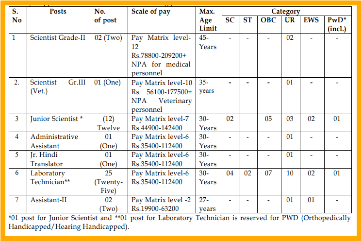

| Name of the Organization : National Institue of Biologicals |
| Name of the Post : Various posts |
| Notification No: A-2.0/2/2025-Admin-NIB |
| Job Category: Central Govt.Job |
| Total No of Vacancies : 44 |
| Starting Date for Apply : 09.03.2026 |
| Last Date for Apply : 08.04.2026 |
| Apply Mode: Online |
| Official Website: https://nib.gov.in |
Organization Details
The National Institue of Biologicals, an autonomous institution under the Ministry of Health & Family Welfare, Government of India is an apex scientific Institute to ensure quality of biologicals in the country.
Name of the Post
Scientist Grade-II
Scientist Gr.III (Vet.)
Junior Scientist
Administrative Assistant
Jr. Hindi Translator
Laboratory Technician
Assistant-II

Education Qualification
Scientist Grade-II
MBBS from MCI recognized Medical College
PG Medical degree in the field of Microbiology/ Biochemistry /Immunohematology & Blood Transfusion /Pharmacology /Bacteriology /Serology /Hematology from the recognized University
OR
Master’s degree in Microbiology / Clinical Microbiology /Biotechnology / Bioinformatics / Biochemistry / Bacteriology / Physiology / Pharmacology /Serology /Molecular Biology from any recognized University with at least 60% marks.
Scientist Grade-III (Veterinarian)
M.V.Sc degree Veterinary Medicine/ Veterinary Public Health/ Veterinary Microbiology/ Veterinary Pathology/Veterinary Epidemiology.
Junior Scientist
Master Degree in Microbiology/ Clinical Microbiology /Biotechnology/ Bioinformatics /Bio chemistry/ Bacteriology/ Pharmacology/ Serology/ Molecular Biology/Physiology from any recognized University/ Institution
Administrative Assistant
Graduate in Arts/Commerce/Science with 50% marks from a recognized University/Institution
Junior Hindi Translator
Master’s degree from a recognized University in Hindi with English as a compulsory or elective subject or as the medium of examination at the degree level
Laboratory Technician
Bachelor’s degree in biology (with Zoology& chemistry as subjects) or B.Sc. Microbiology or B.Sc. Biotechnology or B.Sc. Biochemistry or B.Sc. Molecular Biology from a recognized University and Diploma in Medical Laboratory Technology from a recognized University or institute
Assistant-II
12th Class pass with 50% marks with Arts/Commerce/Science subject from a recognized Board or University,
Accurate Typing speed of 35 WPM in English or 30 WPM in Hindi on computer, (35WPM in correspond to 10,500 KDPH and 30 WPM correspond to 9000 KDPH. Note: Candidate with Bachelor degree & Professional certificate in HR/MM/accounts with computer Science/ IT will be preferred
Salary
Scientist Grade-II: Pay Matrix level12 Rs.78800-209200+ NPA for medical personnel
Scientist Gr.III (Vet.):Pay Matrix level-10 Rs. 56100-177500+ NPA Veterinary personnel
Junior Scientist :Pay Matrix level-7 Rs.44900-142400
Administrative Assistant: Pay Matrix level-6 Rs.35400-112400
Jr. Hindi Translator: Pay Matrix level-6 Rs.35400-112400
Laboratory Technician: Pay Matrix level-6 Rs.35400-112400
Assistant-II: Pay Matrix level -2 Rs.19900-63200
No. of Vacancies
Total: 44
Scientist Grade-II – 02 Posts
Scientist Gr. III (Vet.) – 01 Post
Junior Scientist – 12 Posts
Administrative Assistant – 01 Post
Jr. Hindi Translator – 01 Post
Laboratory Technician – 25 Posts
Assistant-II – 01 Post
Important Dates
Start Date to Apply : 09.03.2026
Last Date to Apply : 08.04.2026
Selection Process
Scientist Grade-II
Eligible candidates will be called for the Computer Based Examination (Objective Type Multiple Choice), with a negative marking of 0.25 marks for each wrong answer. Merit list will be prepared out of the candidates obtaining the qualifying marks (minimum of 60%) in Computer Based Examination. Candidates in the merit list will be called for personal discussion in the ratio of 1:10. The selection of the candidates will be based on score in the screening test (40% weightage), credentials like experience, publications etc. (30% weightage) and personal discussion (30% weightage).
Scientist Grade-III (Veterinarian)
Eligible candidates will be called for the Computer Based Examination (Objective Type Multiple Choice), with a negative marking of 0.25 marks for each wrong answer. Merit list will be prepared out of the candidates obtaining the qualifying marks (minimum of 60%) in Computer Based Examination. Candidates in the merit list will be called for personal discussion in the ratio of 1:10. The selection of the candidates will be based on score in the screening test (40% weightage), credentials like experience, publications etc. (30% weightage) and personal discussion (30% weightage).
Junior Scientist & Laboratory Technician
The eligible candidates will be called for the Computer Based Examination (Objective Type Multiple Choice). Merit list will be prepared out of the candidates obtaining the qualifying marks (minimum 50% for GEN, EWS & OBC and 40 % in case of post reserved for SC/ST category) in the Computer Based Examination.
Administrative Assistant
The eligible candidates will be called for the Computer Based Examination (Objective Type Multiple Choice), with a negative marking of 0.25 marks for each wrong answer. Merit list will be prepared out of the candidates obtaining the qualifying marks (minimum of 60%) in Computer Based Examination. Candidates for Administrative Assistant in the merit list will be called for skill test in the ratio of 1:5.
Jr. Hindi Translator
The selection for the post of Junior Hindi Translator will be made through an Open Competitive Examination consisting of two papers – Paper-I and Paper-II. Paper-I will be a Computer Based Examination Objective Type Multiple Choice) comprising questions in both English and Hindi, with a negative marking of 0.25 marks for each wrong answer. Evaluation of Paper-II will be undertaken only for those candidates who qualify in Paper-I by securing a minimum of 50% marks.
Paper-II will be descriptive in nature and intended to assess the candidate’s writing and translation skills, which are essential for this post. It will include translation from English to Hindi and vice versa, précis writing, and essay/paragraph writing in both languages. The final merit list will be prepared on the basis of marks obtained by the candidates in Paper-II only.
Assistant – II
The eligible candidates will be called for the Computer Based Examination (Objective Type Multiple Choice), with a negative marking of 0.25 marks for each wrong answer. Merit list will be prepared out of the candidates obtaining the qualifying marks (minimum of 60%) in Computer Based Examination. Candidates for Assistant-II in the merit list will be called for skill test in the ratio of 1:5
Age Limit
Scientist Grade-II – 45 Years
Scientist Gr. III (Vet.) – 35 Years
Junior Scientist – 30 Years
Administrative Assistant – 30 Years
Jr. Hindi Translator – 30 Years
Laboratory Technician – 30 Years
Assistant-II – 27 Years
Relaxation of Upper age limit
For SC/ ST Applicants: +5 years
For OBC Applicants: +3 years
For PwBD (Gen/ EWS) Applicants: +10 years
For PwBD (SC/ ST) Applicants: +15 years
For PwBD (OBC) Applicants: +13 years
For Ex-Servicemen Applicants: As per Govt. Policy
Website Links
Follow on my Social Media